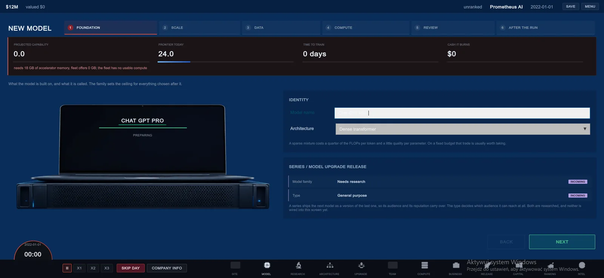

I needed one answer to “how good is this model?”
A tycoon game can fake this with a hidden rating table. I did not want that. If parameter count, data and compute are central decisions, they need to meet in one consistent quality function or the creator becomes theatre.
Scaling Laws therefore uses a Chinchilla-style parametric loss relationship as the single model-quality calculation. Parameter count and training tokens both matter. Spending the same compute badly can give a worse result.

Around twenty tokens per parameter
The current fit puts the compute-optimal region around twenty training tokens per parameter. That is useful as game design because it creates a visible balance. Push parameter count too high without enough data and the run is undertrained. Push data too far for the model size and the player is paying for diminishing value.
The creator can show that trade live instead of asking the player to memorize the paper.
The capability score is intentionally not MMLU
The game converts the loss into a relative capability scale. Ten times the effective compute maps to roughly ten capability points. That makes the frontier readable across a multi-year campaign, but it is not a claim that “72 capability” equals a particular benchmark score in the real world.
That separation matters. The simulation borrows a relationship from research; it does not borrow scientific authority for every number I put on the HUD.
Projection first, outcome later
The new-model screen shows a projection. Finishing the run creates the actual model outcome around that estimate. I keep those states separate in code because otherwise a forecast silently becomes a measurement the moment the player clicks Train.
The same rule applies to future hardware entries and rival releases. Known reference data and projected data can live in the same campaign, but the UI should not pretend they came from the same source.
Research is a reference, not a cage
The original Chinchilla paper is the starting point, and the project also follows later work that re-examined one of its fitting procedures. The goal is not to reproduce a paper line for line. The goal is to keep the training decision coherent enough that “scale” means something every time it appears in the game.
When the model creator changes, the simulation should still be able to explain why the number moved. If I cannot explain it, I do not want to hide it behind a fancier progress bar.
References I am using
The research reference is Hoffmann et al., Training Compute-Optimal Large Language Models. I also keep the 2024 Chinchilla Scaling replication attempt beside it because it re-examines the third fitting procedure instead of treating every printed constant as untouchable.
The longer implementation breakdown lives on the Development / Scaling page.
This note describes work visible in the current project or simulation foundation. Planned pieces remain labelled on the public roadmap instead of being written here as if they already shipped.